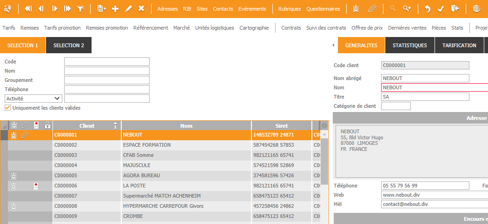

Il est possible d'avoir, au-dessus du tableau de la liste du zoom, des onglets pour avoir plus de place pour placer les champs de filtrage.
Principe :
La page 3 du masque ne contient plus le tableau mais une grille avec deux panels. Celui du haut contiendra les onglets, et celui du bas le tableau.
Les pages qui contiennent le tableau et les onglets sont libres. Pour l'exemple, on va supposer que le tableau sera en page 4, et les onglets commencent en page 5.
Page 3 :
Objet Grille
Panel du haut : page 5
Panel du bas : page 4
Page 4 :
Le tableau du Zoom.
La taille en hauteur de cette page devra être la taille de page 3 - taille de la page des onglets.
La page doit être en largeur et hauteur variable.
Page 5 :
Premier onglet.
La taille en hauteur de cette page correspond à la hauteur souhaitée.
La page doit être en largeur variable.
Il faut également créer un onglet avec en point d'arrêt 33.
Page 6 :
Second onglet.
La taille en hauteur doit être la même que la page du premier onglet.
La page doit être en largeur variable.
Rajouter l'onglet créé précédemment.
Dans le module du traitement du zoom, dans la procédure ZoomDebut, il est impératif de renseigner la page contenant réellement le tableau en l'affectant à la variable Zoom.PageListe.
Avec l'exemple ci-dessus, on écrit :
Public Procedure ZoomDebut
BeginP
Zoom.PageListe = 4
EndP
